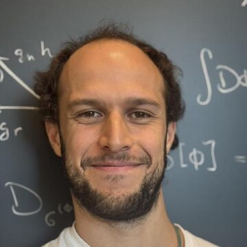

I am a Schmidt AI in Science Postdoctoral Fellow at the University of Chicago, working with Chenhao Tan at the Chicago Human + AI Lab and with James Evans at Knowledge Lab, mainly on AI for Science. Before that, I was a postdoc in the newly founded TELUS Digital Research Hub at the University of São Paulo, focused on AI Safety and Alignment.
I did my PhD at the University of Chicago with Clay Córdova, on quantum field theory, exploring generalizations of the notion of symmetry, work recognized with the Nathan Sugarman Award. Earlier, I completed a master's at the University of São Paulo with Gustavo Burdman in particle physics, searching for physics beyond the Standard Model. During it I interned at the Fermilab Theory Division, where, together with Patrick Fox and Bogdan Dobrescu, I solved a longstanding problem in building models of new physics, highlighted by the Brazilian Physical Society.
I arrived at physics sideways. I started university in geography, reading sociology and economics, and became obsessed with philosophy of science. That led me to physics. As an undergraduate I worked with Nestor Caticha on the statistical mechanics of neural networks and their emergent collective behavior, something I am now circling back to.